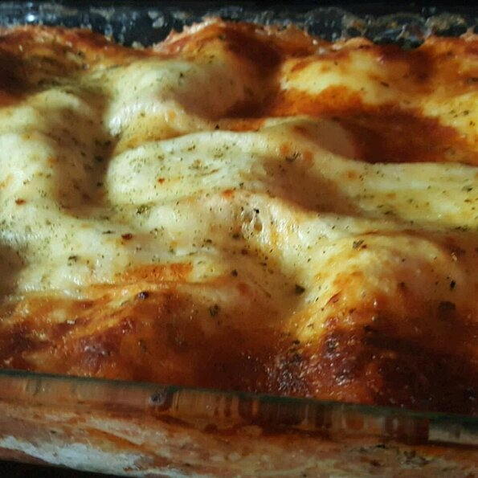
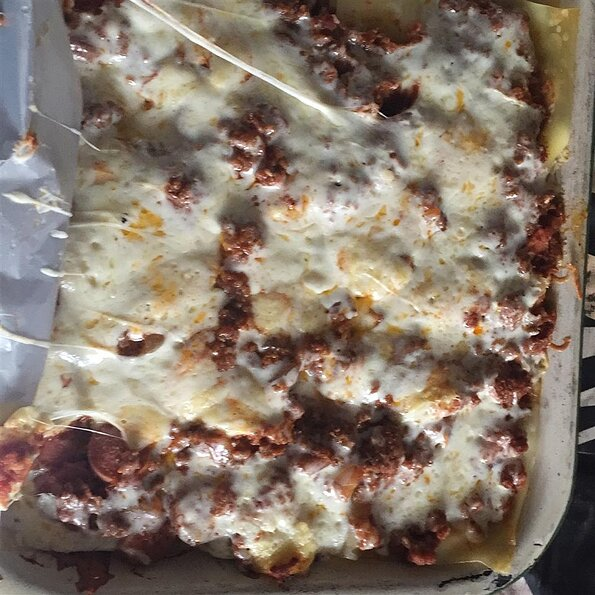

Menu
Lisa's homemade Lasagna Recipe

Lisa's homemade lasagna is a classic, delicious dinner that every family should have in their recipe rotation. It's always better homemade!
Ingredient
- 1 pound lean ground beef
- 1 onion, chopped
- 1 green bell pepper, chopped
- 1 teaspoon Italian seasoning
- A pinch of Salt and pepper
- 2 (6 ounce) cans tomato paste
- 2¼ cups water
- 1 pint part-skim ricotta cheese
- 1 egg
- 2 cups shredded mozzarella cheese
- 8 lasagne noodles, cooked and drained
Cooking Steps
- Brown meat with onions and bell peppers, and season to taste.
- Add tomato paste and water till it simmers.
- In a mixing bowl, mix ricotta cheese with beaten egg and set aside.
- Preheat oven to 190 degrees C (370 degrees F)
- Butter a 9 x 13 inch baking dish.
- Begin layering all ingredients beginning with a few spoonfuls of tomato sauce.
- Follow with noodles, then ricotta mixture, and shredded mozzarella.
- Repeat until dish is filled.
- Bake at 190 degrees C (375 degrees F) about 35 to 45 minutes, until bubbly.
- Let cool a couple of minutes before cutting and serving.

Tip: This for a serving for upto seven people
Recipe credits: All Recipes Lisa B